地政学
上海は長江の出口を押さえ、中国内陸の生産力を海へ出す結節点です。黄浦江、長江河口、東シナ海、デルタ都市群が重なり、港湾、金融、外資、国家戦略、国際航路の緊張が街路に現れます。中国が世界市場へ開く窓です。

🇨🇳 中国 / アジア / World City Atlas
長江デルタの河口に立つ中国最大級の港湾・金融都市。外灘の記憶、浦東の高層金融、港湾物流、里弄の生活、移住労働、江南文化が一つの都市圏で重なります。
都市の骨格
上海は黄浦江の両岸に外灘と浦東を向かい合わせ、長江デルタの工業都市、水郷、空港、港湾、鉄道を束ねます。高層ビルの足元には、路地住宅、卸売、食堂、祈り、移住者の暮らしが残ります。
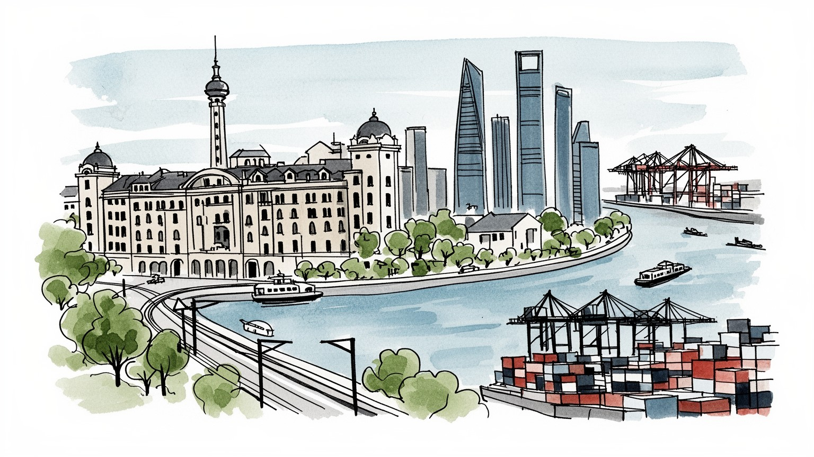
上海は長江の出口を押さえ、中国内陸の生産力を海へ出す結節点です。黄浦江、長江河口、東シナ海、デルタ都市群が重なり、港湾、金融、外資、国家戦略、国際航路の緊張が街路に現れます。中国が世界市場へ開く窓です。
浦東の金融、外高橋や洋山の港湾、張江の技術産業、周辺の自動車、電子、化学、半導体、商業が雇用を作ります。配送、清掃、建設、飲食、介護、港湾作業、移住労働も都市を支え、家賃と戸籍が生活条件を分けます。
上海文化は江南の水辺、租界の建築、海派の出版、映画、商業、現代美術を重ねます。寺院、道観、教会、モスク、祖先祭祀、地域の祈りが残り、消費都市の速さの中に、家族と共同体の時間が続きます。静かに息づきます。
観光客は外灘、浦東、豫園、旧フランス租界、南京路、博物館、水郷へ向かいますが、住民には通勤、住宅、教育、医療、老朽住宅、洪水、物価が日々の条件です。名所の近くに市場、団地、食堂、路地の生活が続きます。
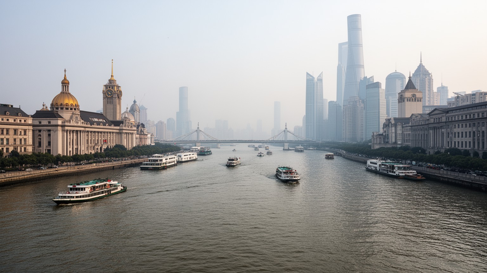
上海の地理は、黄浦江が長江河口へ注ぎ、さらに東シナ海へ開く場所にあることから始まります。市街地の中心を流れる黄浦江は、外灘と浦東を向かい合わせる景観の軸であると同時に、港、造船、倉庫、橋、トンネル、フェリー、観光船を束ねる実用の水路です。長江の上流には南京、武漢、重慶へ続く巨大な内陸市場があり、南には蘇州、杭州、寧波、無錫などの工業都市と水郷が連なります。上海は単独の都市ではなく、長江デルタ全体の出口として動きます。低く湿った平野、運河、埋立地、河口の砂州は、物流の便利さと浸水の弱さを同時に作りました。地下鉄、高速鉄道、高速道路、浦東と虹橋の空港、洋山深水港を重ねると、上海の力は中心の高層ビルだけでなく、水と陸を結ぶ広域の接続から生まれることが分かります。川を渡ることは、古い港湾都市から金融と技術の新しい都市へ移る体験でもあります。河口の都市であるため、潮位、台風、豪雨、地盤沈下、排水は日常の安全に関わります。地理は背景ではなく、上海の経済、住宅、観光、リスクを同時に決める骨格です。さらに黄浦江の支流や運河は、古い工場地帯、卸売市場、住宅地を細かく結び、再開発の場所を方向づけます。水辺の遊歩道が整うほど、背後の堤防、排水、橋の管理も都市の質を左右します。川沿いの余白は、災害時の逃げ場と日常の休息を兼ねる貴重な公共空間です。
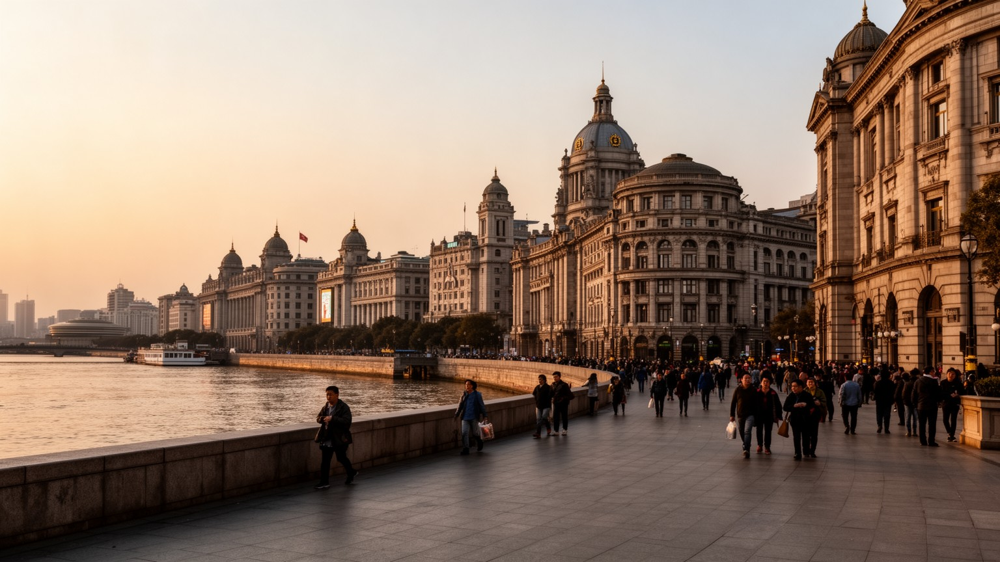
外灘は上海を象徴する水辺ですが、その美しさは植民地的な力関係の記憶と切り離せません。十九世紀以降の条約港として、外国銀行、商社、海運会社、税関、新聞、クラブが黄浦江沿いに並び、石造建築は国際金融と不平等条約の時代を都市の表面に刻みました。租界は近代的な道路、上下水道、電灯、商業、娯楽、出版を持ち込みましたが、同時に中国人の居住、法制度、警察権、土地利用を分ける空間でもありました。外灘を歩くと、近代都市の華やかさと主権の分断が同じ壁面に重なっていることが分かります。現在の外灘は観光、金融、ホテル、散歩道として使われ、対岸の浦東の高層群と向かい合います。この対比は、過去を消すのではなく、上海が外からの資本、制度、欲望を受け入れながら自分の都市像を作り直してきたことを示します。旧租界の街路、プラタナス、洋館、里弄住宅、カフェ、教会も、単なる異国趣味ではなく、移民、商人、労働者、知識人、革命家が交差した記憶の場所です。外灘を読むには、写真になる夜景だけでなく、誰がここで富を作り、誰が排除され、どの記憶が現在の観光価値へ変わったのかを見る必要があります。上海の近代性は、誇りと痛みを同時に含む都市の層です。建物の保存は、歴史を美しく磨くだけでなく、支配、抵抗、商業、労働の関係をどう語るかという作業でもあります。水辺の散歩道には、都市が自分の過去を選び直す緊張が残ります。
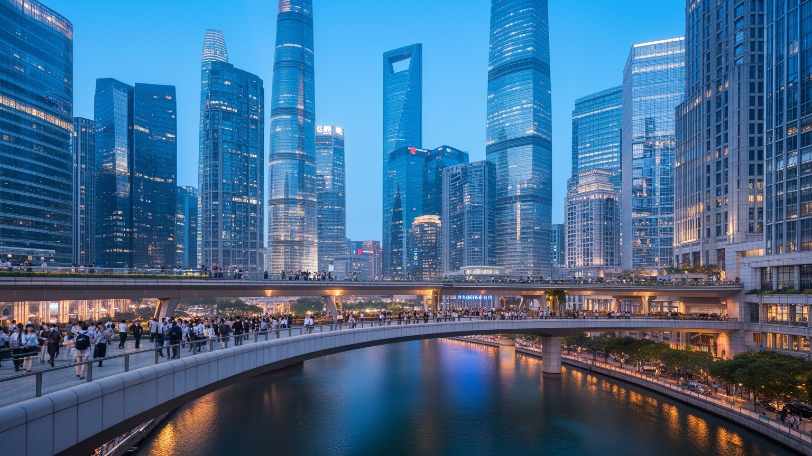
浦東は、上海が改革開放後に自分の未来像を最も強く示した場所です。かつて倉庫、工場、農地、渡船の風景が多かった東岸は、陸家嘴の金融地区、張江の技術産業、自由貿易試験区、国際空港、展示会場、高層住宅へと大きく変わりました。陸家嘴の塔群は、中国が資本市場、銀行、保険、証券、外資、国際会議を上海へ集めようとする意思を見せます。外灘の歴史的な銀行建築と対岸の浦東を一緒に見ると、上海金融は過去の租界の記憶と国家主導の開発を重ねながら作られたことが分かります。ただし金融都市の姿は、オフィスの高さだけではありません。地下鉄の乗り換え、昼食を運ぶ配達員、清掃、警備、ビル設備、会議通訳、法律、会計、ホテル、住宅ローン、投資規制が日々の仕事を支えます。金融の国際化は人民元、資本移動、規制、米中関係、香港との役割分担にも左右され、都市の表情は政策と市場の間で変わります。浦東の開発は雇用と税収を生みましたが、地価上昇、通勤距離、古い集落の消失も伴いました。上海を金融都市として読むなら、グローバルな資本の流れと、そこで働く人の住まい、移動、生活時間を同時に見る必要があります。高層ビルの足元で都市の現実が動いています。金融街で働く若い専門職も、住宅ローン、教育費、長時間勤務、親の介護から自由ではありません。資本の速度と生活の遅さが交差する点に、浦東の現在があります。
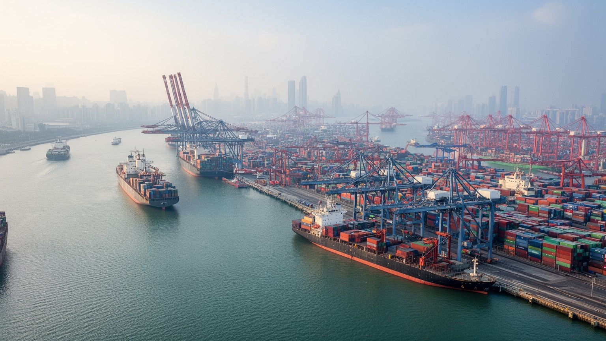
上海港は、都市の見えにくい心臓です。外高橋のコンテナ埠頭、洋山深水港、浦東空港の貨物、長江沿いの内航輸送、鉄道と高速道路のネットワークが、中国の工場と世界市場を結んでいます。洋山港は沖合の島と東海大橋で結ばれ、大型コンテナ船を受け入れることで、河口の浅さという制約を越えました。港湾物流は景観としては中心から離れていますが、上海の金融、製造、商業、通販、展示会、観光を支える基盤です。コンテナ、冷蔵倉庫、通関、保険、船員、トラック運転手、クレーン操作、整備、港湾警備、データ管理が、都市の経済を毎日動かします。物流が滑らかに動くほど、その労働は見えにくくなりますが、遅延、燃料価格、国際関係、感染症対策、台風が起きると、工場の稼働や店頭価格にすぐ響きます。上海の港は、長江デルタの工場地帯と世界の消費地を結ぶだけでなく、内陸都市が海へ出る権利を持つための出口でもあります。港湾都市としての強さは、同時に環境負荷、交通渋滞、沿岸の土地利用、労働安全の課題を伴います。外灘の夜景だけでは、重量のある上海は見えません。海上の貨物、倉庫の夜勤、通関書類、港へ向かう道路まで含めて、上海の世界都市性が成立しています。港で働く人の勤務は天候と船の到着に左右され、都市の昼夜とは違う時間で動きます。その時間のずれも、上海の経済を支える重要な層です。
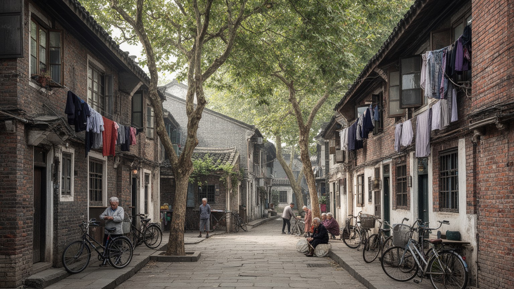
上海の里弄住宅は、近代都市の成長と庶民の暮らしを結ぶ重要な空間です。石庫門の門、狭い路地、共用の台所や水場、小さな商店、洗濯物、近所づきあいは、高層ビルとは違う上海の顔を作ってきました。里弄は租界期の住宅形式として広がり、商人、職人、会社員、労働者、知識人が密集して住む都市の細胞になりました。現在は保存、改修、再開発、観光化が進み、古い住宅の一部はカフェ、ギャラリー、商業施設へ変わっています。設備改善や耐火性、衛生、防災は必要ですが、再開発が進むほど、長く住んだ住民や小さな店は中心部から遠ざけられやすくなります。路地の生活を懐かしい風景としてだけ見ると、狭さ、老朽化、家賃、介護、相続、立ち退き、観光客の騒音が見えません。一方で、近所の目、朝の買い物、子どもの見守り、高齢者の会話、路地の食堂は、高密度都市の安全網でもあります。上海の住宅問題は、単に古い建物を残すか壊すかではなく、中心部に誰が住み続けられるかという問題です。里弄を読むことは、上海の近代性が大通りや銀行だけでなく、共同生活の細かな距離によって支えられてきたことを読むことです。路地の奥には、観光都市の表面より長い時間があります。新しい集合住宅へ移れば設備は良くなりますが、通院、買い物、友人、学校への距離が変わります。住まいの更新は、生活の関係を作り直すことでもあります。
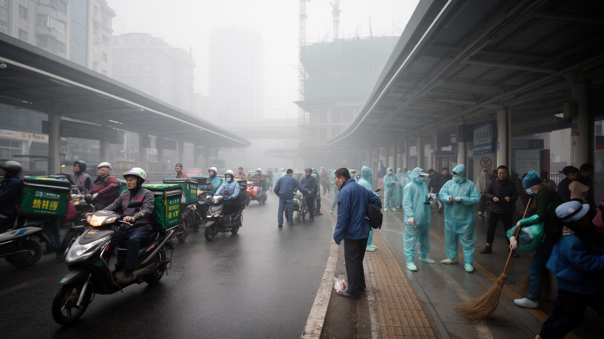
上海の便利さは、地方から来た労働者とサービス業の仕事に大きく支えられています。建設、清掃、警備、飲食、配送、介護、家事、工場、倉庫、ホテル、小売、港湾、修理の現場には、安徽、河南、江蘇、四川など多くの地域から来た人びとがいます。彼らは都市の成長を支えながら、戸籍、子どもの教育、医療、社会保障、住宅契約、賃金、長時間労働という壁に向き合います。上海で働いていても、家族の生活基盤や老親の介護は故郷に残ることがあり、春節の移動は都市と地方をつなぐ大きなリズムになります。高層オフィス、清潔な地下鉄、すぐ届く配達、夜遅くまで開く店は、誰かの不規則な勤務によって成り立っています。都市の経済規模を数字で見るだけでは、こうした労働の時間と身体は見えません。家賃の高い中心部から遠くに住み、長い通勤をする人ほど、都市の便利さを作りながら自分では使いにくいこともあります。上海の包容力は、優秀な専門職を引き寄せる力だけでなく、生活を支える現場労働者が尊厳を保って住めるかで測られます。移住労働を読むことは、上海が全国の資源と人を引き寄せる都市であると同時に、その人びとの権利と家族の時間に依存する都市であることを理解することです。便利さの背後にある人の移動を忘れてはなりません。とくに子どもの進学や高齢の親の介護は、働く場所と家族の居場所を分ける問題として残ります。
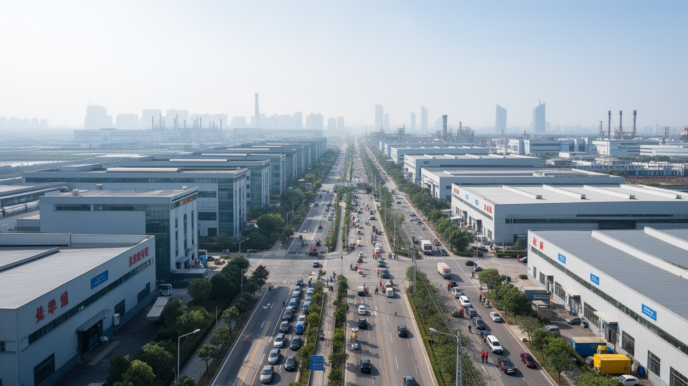
上海の産業は、市内だけで完結しません。嘉定の自動車、張江の半導体とバイオ、金山や漕涇の化学、臨港の先端製造、松江や青浦の工業団地、蘇州や昆山、無錫、杭州、寧波の工場群が、長江デルタの厚い産業圏を作っています。上海は本社、金融、研究、展示会、港、空港を持ち、周辺都市は部品、組立、素材、ソフトウェア、物流を担います。この分業によって、自動車、電池、電子機器、医療機器、ファッション、食品、化学品が国内外へ流れます。産業の高度化は高技能の研究者や技術者を必要としますが、同時にライン作業、検査、保守、倉庫、食堂、寮管理、通勤バスの労働も必要です。上海の強さは、金融都市と製造都市が近い距離で結びつく点にあります。政策はイノベーションや自由貿易を掲げますが、土地価格、環境規制、労働コスト、国際制裁、技術輸出管理の影響も受けます。工場が郊外や周辺都市へ移るほど、中心のオフィスだけを見ても上海経済は理解できません。都市圏の地図を広げると、研究所、港、サプライヤー、住宅地、職業学校、データセンターが一つの生産装置としてつながります。長江デルタの産業は、上海を単なる消費都市ではなく、中国の現代製造を世界へ接続する司令塔にしています。技術開発の競争は、大学教育、職業訓練、外国企業との関係、知的財産の管理にも及びます。工場と金融を結ぶ制度設計が、上海の産業力を支えています。
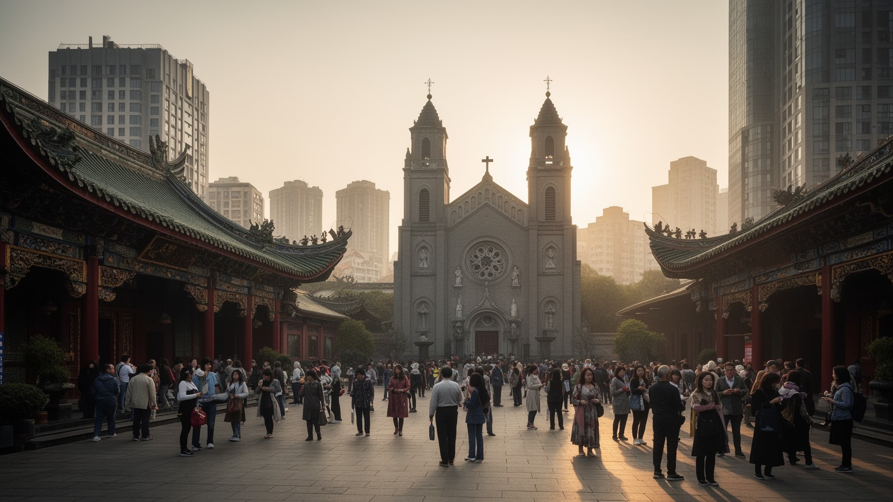
上海の文化は、江南の水辺文化、租界期の国際性、商業都市の速度、映画、出版、演劇、ジャズ、現代美術、ファッションを重ねた海派文化として語られます。二十世紀前半には新聞、雑誌、映画会社、劇場、百貨店、カフェが集まり、上海は中国近代の消費と表現の実験場になりました。現在も美術館、書店、ライブハウス、大学、デザイン、広告、配信、アートフェアが、国内外の感性を取り込みます。ただし文化は消費だけではありません。玉仏寺、城隍廟、龍華寺、教会、モスク、道観、墓参、祖先祭祀、旧暦の行事は、速い都市の中で家族と共同体の時間を保ちます。旧租界の教会やユダヤ人難民の記憶、江南の廟会、商売の縁起、家庭の仏壇は、上海が単一の近代都市ではなく、多様な祈りと移動の都市であることを示します。文化産業の華やかさの背後には、編集者、翻訳者、舞台技術者、清掃、警備、設営、学生アルバイトの労働があります。家賃の上昇で小さな劇場や書店が消えると、都市の表現の厚みも失われます。上海の文化を読むには、外向きの洗練だけでなく、生活の節目、祈りの場所、作り手の居場所がどれだけ残っているかを見る必要があります。そこに上海の都市としての深さがあります。消費の速さが都市の魅力を作る一方、静かに残る墓地、寺院、古い劇場は、住民が時間を取り戻す場所です。速さと記憶の均衡が上海文化を形作ります。
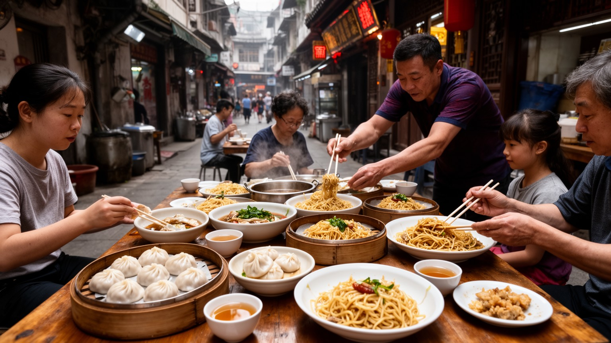
上海の日常は、食の細かなリズムに表れます。朝の生煎、油条、豆漿、小籠包、葱油拌麺、紅焼肉、上海蟹、江南の甘みを帯びた料理、職場の昼食、百貨店の惣菜、路地の食堂、外資系カフェが同じ都市で並びます。食は観光の楽しみであると同時に、通勤前の短い時間、家族の週末、同僚との会食、高齢者の買い物、移住者の郷土料理を支えるものです。市場や小店では、野菜、魚、豆腐、麺、点心が地域の所得や年齢層を映します。再開発で路地の店が消えると、住民は便利なチェーン店を得る一方、顔なじみの安い食事や世間話の場所を失うことがあります。上海の食文化は洗練された高級料理だけでなく、狭い厨房、早朝の仕込み、配達、皿洗い、冷蔵物流、衛生管理、家族経営の長い労働に支えられています。観光客が人気店に並ぶほど、家賃や価格は上がり、地元の常連が使いにくくなることもあります。食を読むことは、上海の生活費、労働時間、高齢化、移住、地域の記憶を読むことです。味の甘さや小さな点心の形には、江南の水辺と商業都市の忙しさが入っています。食卓は、巨大都市の中で人が自分の出身、家族、階層、仕事の時間を調整する場所です。上海の毎日は、名所よりも朝食の湯気に濃く現れます。夕方の市場や団地前の屋台には、帰宅する人の疲れと会話が集まり、都市の温度がよく見えます。
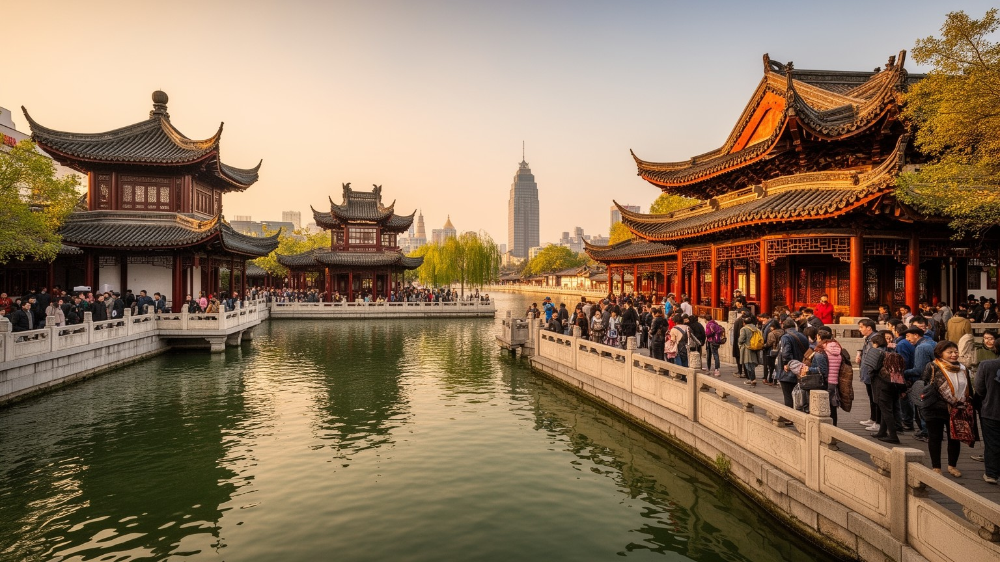
上海観光は、外灘と浦東の夜景だけではありません。豫園と城隍廟は古い市街の商業と信仰を見せ、南京路は百貨店と歩行者天国の消費文化を示し、旧フランス租界の街路は住宅、カフェ、教会、革命史跡を重ねます。上海博物館や美術館は中国美術と現代文化をつなぎ、田子坊や新天地は里弄の商業化を考える入口になります。少し足を延ばせば朱家角などの水郷が、運河、橋、家屋、江南の生活を見せます。しかし観光の成功は、名所の数だけでは測れません。混雑、写真撮影、短期滞在、土産物化、家賃上昇は、住民の日常や小さな店を変えます。歴史的建物を保存しても、そこに暮らす人が消えれば、都市遺産は舞台装置に近づきます。外灘の夜景を楽しむ人、豫園で祈る人、旧租界の学校へ通う子ども、朝に市場へ向かう高齢者、観光客を案内するガイドは、同じ都市空間を違う時間で使っています。上海の遺産を読むには、建物の美しさだけでなく、誰の記憶が残され、誰の生活が観光経済に押されるのかを見る必要があります。観光都市としての上海の強さは、国際的な洗練と路地の生活がどこまで共存できるかにかかっています。過去が現在の暮らしを支えるとき、遺産は生きた場所になります。混雑を避ける管理、修復の費用、地域商店の継続も、観光の質を決める大切な条件です。名所は日常を壊さずに開かれる必要があります。
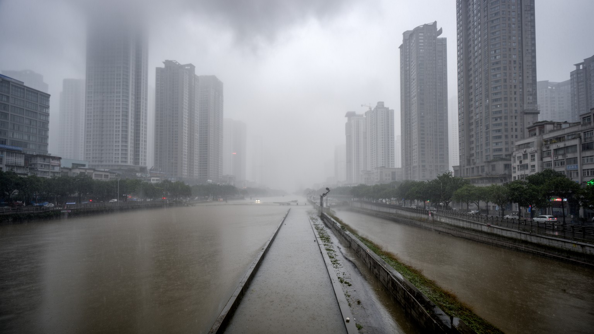
上海は水に恵まれた都市であると同時に、水に弱い都市でもあります。長江河口の低い平野にあり、黄浦江、蘇州河、運河、海に近い埋立地が都市を支えています。梅雨の大雨、台風、高潮、河川水位の上昇、地盤沈下、海面上昇は、地下鉄、地下街、住宅地、港湾、空港、工場に影響します。排水ポンプ、防潮堤、水門、緑地、湿地、ハザード管理は、上海の見えにくい生命線です。気候リスクは将来の抽象的な話ではなく、通勤、配送、学校、病院、観光、港湾作業に直接関わります。夏の蒸し暑さは屋外労働者、配達員、高齢者、古い住宅の住民に負担をかけ、冷房を使える人と使えない人の差を広げます。高層ビルとアスファルトは熱をため、強い雨は地下空間の便利さを危険へ変えることがあります。上海の都市更新は、金融街や住宅開発だけでなく、日陰、緑地、水辺の余裕、避難情報、公共施設の冷房、老朽住宅の改修を含む必要があります。港湾都市の競争力は、気候への耐性なしには保てません。水辺の美しさを楽しむほど、その水を制御し、逃がし、共に暮らす技術と制度が重要になります。上海の未来は、川と海を都市の魅力として使いながら、弱い住民を水害と暑さから守れるかで測られます。災害時には外国人住民や観光客への情報、停電時の高層住宅、地下施設の避難も課題になります。水の都市は、備えの都市でもあります。
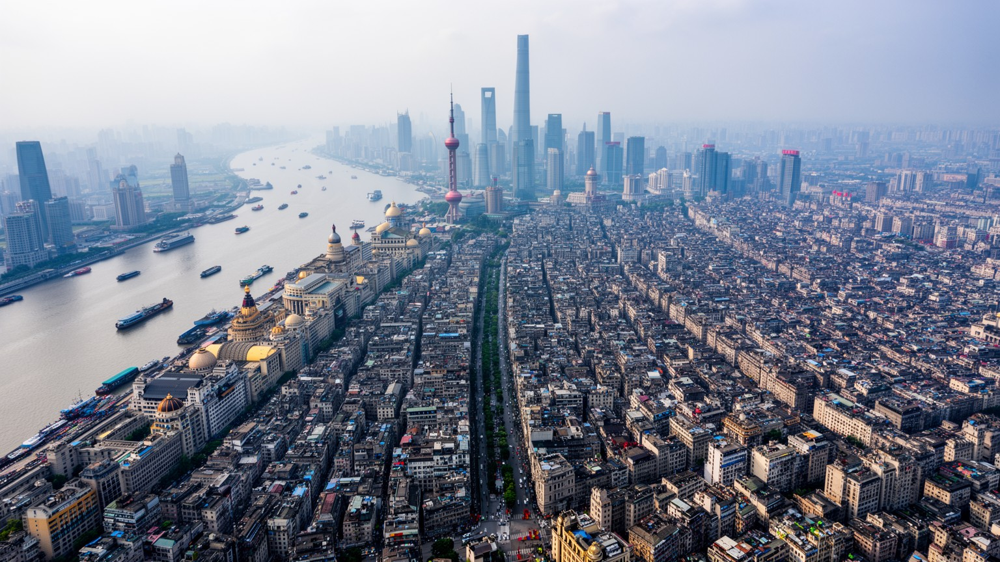
上海を世界都市として読む理由は、GDPや高層ビルの数だけではありません。黄浦江と長江河口、条約港の記憶、浦東の金融、洋山港の物流、里弄住宅、移住労働、長江デルタの製造、海派文化、食の日常、観光遺産、水害リスクが、一つの都市圏で互いに結びついています。上海は中国の内陸を世界市場へ開く出口であり、外から来た資本と制度を吸収して自分の形へ変えてきた都市です。その強さは国際性にありますが、国際性は外灘の夜景だけでなく、港の夜勤、工場の部品、路地の朝食、家賃に悩む労働者、祈りの場所、地下鉄の混雑にも現れます。ニューヨークやロンドンのような金融都市と比べると、上海は国家主導の開発、製造業との近さ、河口の地理によって独自の位置を持ちます。都市の表面は速く変わりますが、川、水郷、租界、里弄、移住者の生活は、上海の読みにくい厚みを作っています。上海を理解することは、現代中国がどのように世界経済と接続し、その接続の利益と負担を都市の中で配分しているかを見ることです。世界都市としての上海の価値は、輝く金融街と重い港湾、洗練された消費と見えにくい労働を同時に読める点にあります。そこに現代の河口都市の力と脆さが集まっています。強さを支えるのは、国家戦略だけでなく、家族、職場、路地、港、学校が毎日行う調整です。上海は完成した象徴ではなく、変化を受け止め続ける生活都市です。